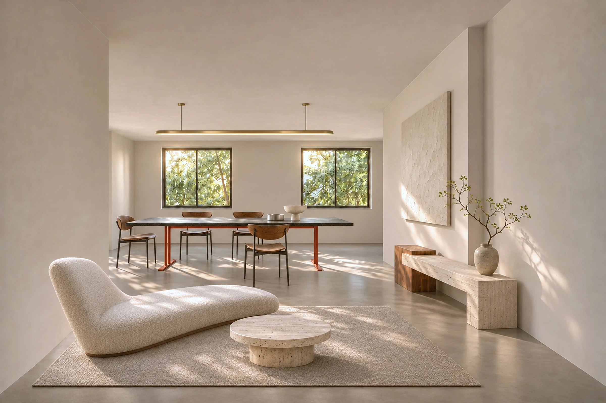

01余白住宅 / 82 m²
讓光在這裡慢慢停留。
一張家的平面圖，五個讓生活停下來的地方。從光線開始，慢慢走進每個角落。
選一個房間 ↗
在這裡，找到你的留白。PLAN / 01
點選房間，閱讀這個家的光。82 m² ↗
02 / 光的路線
讓時間，帶你進屋。
拉動時間軸，早上走進客廳，中午走進廚房，下午停在閱讀角。平面圖也可以直接選材質與黑椅角。
早上
MORNING / 08:00
可用方向鍵移動時間軸。房間照片與頁面底色隨時間切換；材質及黑椅角可由平面圖選讀。

01 / LIVING
客廳
把一天的第一道光，留給相聚。
- 早晨採光
- 骨白躺椅
- 開放動線
設計示意影像；場景由 AI 生成，非實際完工案例。
03 / 留白宣言
剛好，留一些。
沒有填滿的地方，光才有路可走。朱紅給空間一個節拍，骨白讓日常慢慢呼吸。
我們畫下牆，也畫下牆與牆之間的空白。那裡，才是生活真正發生的地方。
04 / 從你的日常開始
你，想留白什麼？
試著說說理想的角落。這是互動示範，內容只留在目前畫面，不傳送或儲存。